Next: Simulation framework
Up: Scheduler Component Architecture (SCA)
Previous: Scoring model - ()
Contents
These are the metrics actually used by the scheduler to rank the list of potential observation group candidates to do next from the pool of available groups.
Some of these metrics are peculiar to despatch shchedulers, others are more generally applicable.
- Height metric 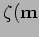 simply measures the elevation of the group's target at the time of potential observation. Variations on this metric can inlcude taking the mean or peak elevation over the duration of the group. If a group has multiple targets various averages can be used such as taking mean elevation of each target at some point in the execution. More complex averages could take into account the actual times at which each target will be observed.
- Airmass metric 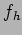 is similar to except that the airmass is used rather than elevation thus taking into account the nonlinear nature of the relationship between sky-quality and elevation.
- Transit metric 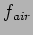 is an attempt to take into account the unfair advantage provided by the two previous metrics and . These force a bias towards targets whose declination is close to the latitude of the observatory. This metric measures the quality of observing at a given time by taking the current target elevation as a fraction of its best elevation. This is generally taken as its transit elevation which can be calculated easily. For groups which do not transit during the feasibility window and in particular for groups with very short feasibility windows this may still be somewhat unfair as the transit elevation may not be remotely achievable in that window.
- Optimal elevation 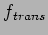 and optimal airmass 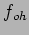 metrics attempt to redress this problem by taking the ratio of current elevation to best possible elevation (or airmass) in the group's feasibility window.
- Slew metric 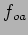 attempts to penalize groups for which a long axis slew (including rotator) from the current telescope position is required. This can prove very difficult to calculate as it requires the scheduler to predict the way the executor will choose rotation angles - the recently introduced cardinal pointing (CP) regime on the LT to handle the problem of coolant pipes in the wrap makes this particularly difficult to determine.
- Sky condition matching metrics 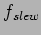 (also 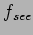 and 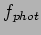) is designed to match a group's sky condition requirements to the actual (or predicted) conditions at the time of execution. This is intended to ensure that groups which do not require particularly good conditions do not take an excessive share of good conditions.
- Lunar condition matching metric 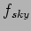 is similar to the above but attempts to prevent groups which can use bright time from taking an excessive shar of dark time.
- Priority metric is designed to ensure that groups of higher scientific priority get a better share of time.
- Resource allocation metric 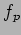 measures the use of various resources by a group or its containing proposal. This is typically the use of time from the proposal's total semester allowance. It can be used either to help distribute time fairly between proposals or to force completion of proposals which have already been started.
- Demand metric uses the group's demand for time as an indication of the urgency of performing the group (see XXX). The idea behind this is to select the groups which have the most critical requirment for a given time period.
- Urgency metric 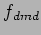 is similar to the demand metric but measures the number of additional chances (in terms of alternative nights on which the group could be observed if not tonight.
- Yield tracking metric 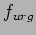 tracking deficit in data product yield - needs past and future yield estimates and yield to-date to allow effect of any deficit to be deduced.
For each of these metrics there are various possibilities for weighting.
- No special weighting.
- Groups expected execution time is used to weight the metric.
- The group's total exposure time is used as a weighting factor.
- Group's priority (or some function of this) is used to scale the metric.
Next: Simulation framework
Up: Scheduler Component Architecture (SCA)
Previous: Scoring model - ()
Contents
Steve Fraser
2008-01-31